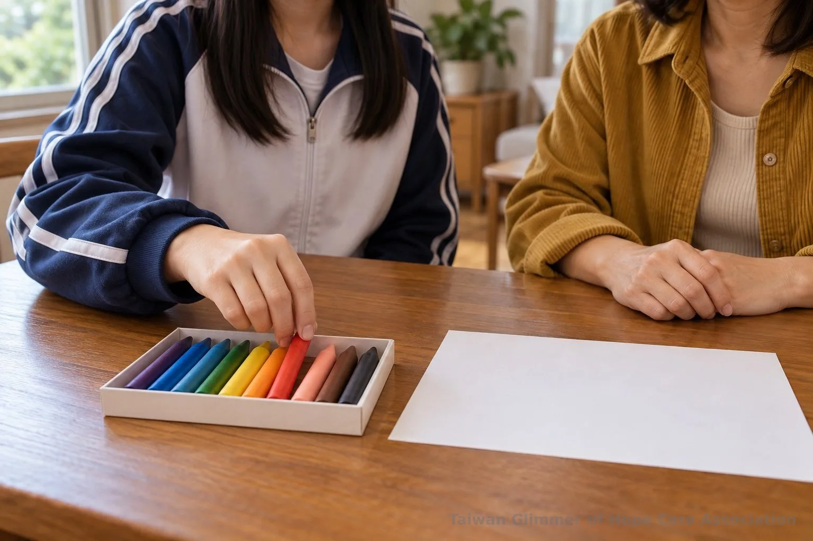
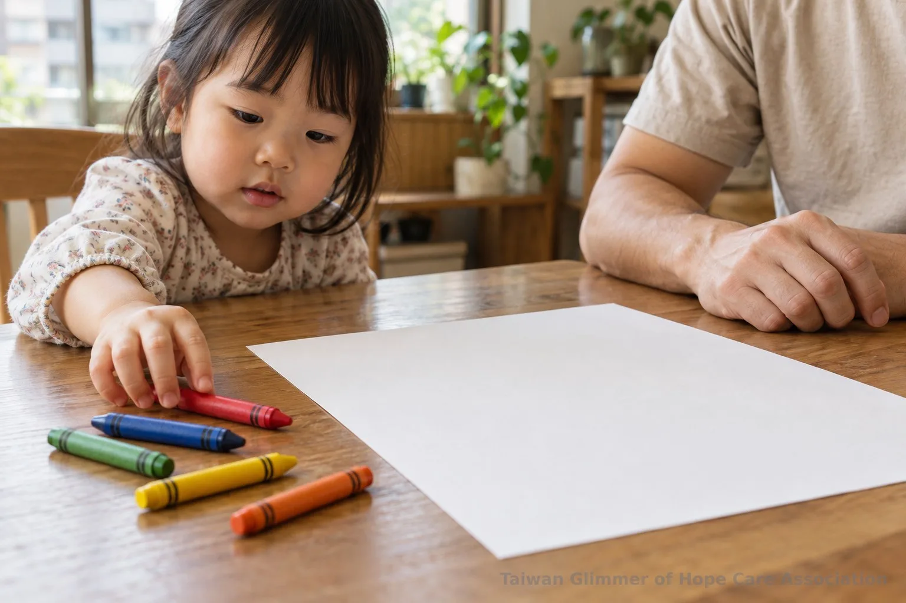
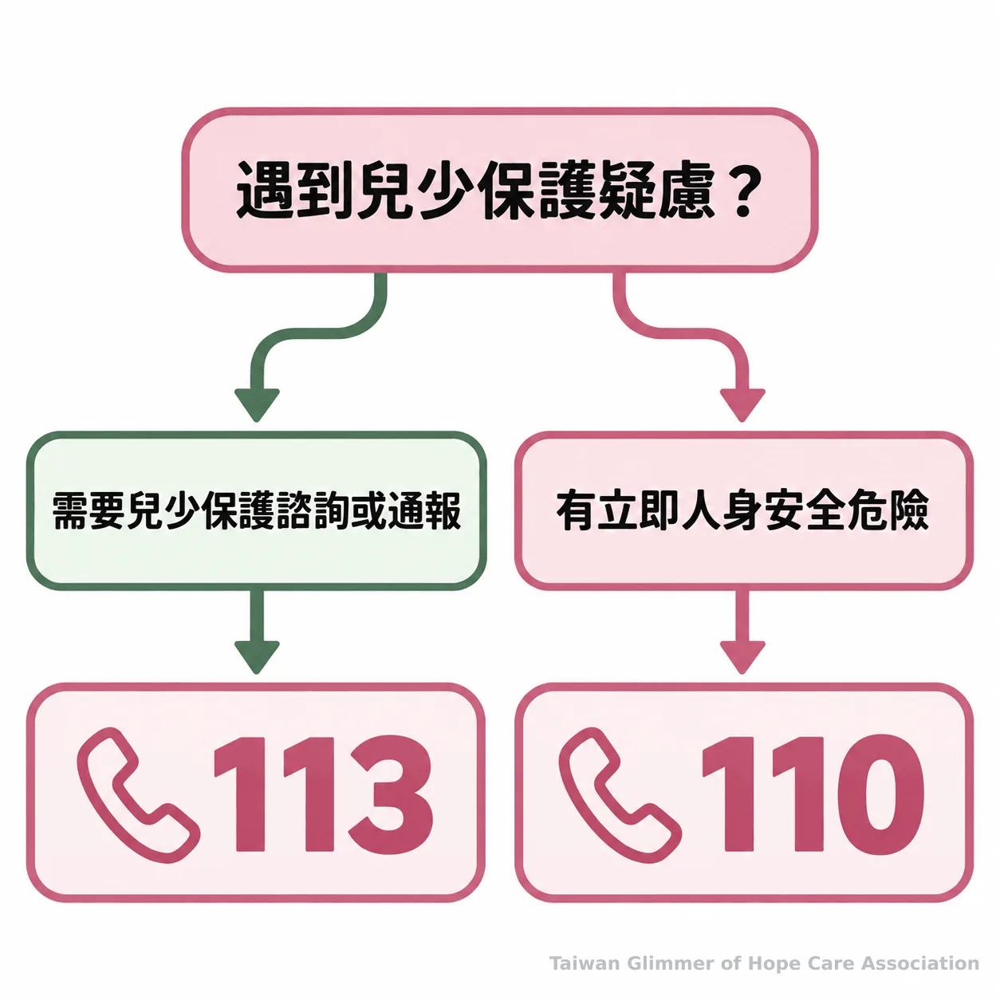

親子畫畫怎麼陪？在家藝術陪伴的 5 個原則
孩子拿畫問好不好時，家長可以怎麼回答？從準備材料、描述畫面到不評分、不解讀、不比較，整理在家親子畫畫的陪伴原則與求助資訊。
【微光專欄｜在家也能做的藝術陪伴｜系列六之 1】
台灣微光希望關懷協會
孩子把畫拿來問「畫得好不好？」大人可能立刻回答「好漂亮」，也可能忙著提醒哪裡要補、猜畫裡的人是不是在難過。親子畫畫可以從更簡單的地方開始：看見畫面上實際發生的事，再把下一步留給孩子。以下整理在家就能嘗試的藝術陪伴原則；這些日常做法不評估繪畫的治療效果，也不能由作品推斷孩子的心理狀態。
一、孩子問「畫得好不好？」先描述畫面
先說出看得見的顏色、線條或動作，讓孩子知道大人有在看，不急著替作品打分數。
「你在這裡用了很多綠色」「我看到你畫了幾條彎彎的線」都是描述；「畫得真像」「這裡畫錯了」則把注意力放到標準上。孩子若接著說這是什麼，就聽他說；若只是想讓大人看一眼，也不必追問作品的意思。可以接著問：「你最想讓我看哪裡？」
美國幼兒教育協會（NAEYC）的過程導向藝術指引提到，孩子不必照著步驟或範例完成作品，也沒有唯一正確的探索方式；帶領者可以留意並描述看見的細節。這份指引談的是幼兒藝術活動的安排，不是繪畫具有心理治療效果的證據。更多藝術陪伴與活動安全的整理，可參考兒少藝術活動如何保留選擇與安全界線。（Laurel Bongiorno, NAEYC, How Process-Focused Art Experiences Support Preschoolers）
「沒有逐步指令、沒有讓孩子照著畫的範例，也沒有唯一正確的探索方式。」這是 NAEYC 對過程導向藝術活動的說明，適合作為大人陪畫時留出選擇空間的提醒。

二、一張紙和幾支蠟筆，讓孩子決定怎麼開始
準備容易取得的紙筆，找一段不趕時間的空檔即可；主題、畫法和是否完成，由孩子按自己的步調決定。
不需要先設計一張「應該畫成什麼樣子」的圖，也不用把完成作品當成目標。大人可以把紙筆放在孩子容易取用的地方，問他想用哪一種顏色；如果孩子邀請一起畫，就先問希望大人怎麼參與。孩子換紙、停下來或只畫一小部分，都不必立刻催促或補上自己的版本。
NAEYC 的指引也建議把創作視為開放的探索，提供材料和時間，讓孩子帶領活動。這是幼兒藝術活動的一種安排參考，不代表每個孩子都會有相同反應。孩子的年齡、興趣和當下狀態不同，大人可以依現場調整，不把一套說法當成普遍有效的介入方法。

三、少評分、少解讀、少比較，聽孩子願意說的部分
回應具體畫面，不猜測畫作含意，也不拿手足或同伴的作品排名。
大人可以說「你把紅色和黃色放在一起了」，少用「這張最好看」或「弟弟畫得比較像」。描述不必變成考問，孩子不想說畫的是什麼，可以回答：「好，你想說的時候再告訴我。」如果他想分享，就聽他選擇說出的內容；若不想分享，也尊重這個決定。作品可以先收起來或留在桌上，讓孩子決定要不要展示。
多人一起畫時，分別談每個人正在做的事，不設名次，也不把作品當作能力高低的證明。大人想示範時，先確認孩子是否需要；示範可以是自己的畫法，不必變成要孩子照著複製的標準答案。
- 用顏色、線條和動作等可觀察細節回應孩子。
- 讓孩子選主題、畫法與是否分享，不評分、不比較。
- 藝術陪伴不等於藝術治療，畫作不能單獨用來判定受虐或診斷心理狀態。
四、微光的藝術陪伴課，從作品和情緒話題開始
微光的課程從藝術家作品帶出情緒主題，不設標準答案，也不比較孩子畫得好不好。
實際課程包括以夏卡爾作品延伸「夢想花園」，也邀請孩子把壓力想像成烏雲、怪獸或旋風；在課程結尾，帶領者請孩子分享「我看到……」「我喜歡……」，也邀請他們對自己說「今天的自己，很棒！」這些是藝術陪伴活動的設計內容，不代表治療或成效評估。
照片與紀錄，請見〈瑞芳愛鄰據點：跟著夏卡爾，飛進我的夢想花園〉。想了解不同藝術媒材如何陪孩子談情緒，也可閱讀親子情緒繪畫的幾種練習方式。
五、藝術陪伴有界線，兒少保護疑慮要找正式協助
不能只憑畫作的顏色、線條或內容，判定孩子是否受虐或診斷心理狀態；藝術陪伴也不等於藝術治療。
本文談的是日常共同創作，不評估繪畫的治療效果。不同年齡、個性與家庭情境各有差異，沒有直接且適切的研究支持時，不把一般溝通建議寫成心理介入，也不從畫面替孩子下結論。更多陪伴界線可參考兒少陪伴中的安全原則。
若孩子主動說出讓人擔心的事情，可以先平穩聆聽，不盤問、不要求重畫或證明，也不自行調查。衛生福利部保護服務司說明，113 保護專線提供兒少保護諮詢、通報與求助服務；如有立即人身安全危險，應先撥 110 報警。可查閱衛福部 113 保護專線介紹與內政部警政署 110 報案資訊。

常見問題
先準備紙筆並留出一段不趕時間的相處空檔，再以描述和聆聽回應孩子。
常見問題
Q1：孩子問「畫得好不好」，怎麼回答？
可以先說出一個看得見的細節，例如顏色或線條，再問孩子想讓大人看哪裡；不必急著評分。
Q2：孩子不想畫或不想分享，該怎麼辦？
尊重孩子暫時不畫或不說，不追問原因。材料可以留在容易取得的地方，等孩子想開始時再陪伴。
Q3：大人可以幫忙畫或示範嗎？
孩子邀請時可以一起畫，先問他希望大人怎麼幫。示範不必變成要求孩子照著完成的範本。
Q4：兄弟姊妹一起畫，怎麼避免比較？
分別描述每個人正在做的事，不排名、不問誰畫得比較好，也不把作品當成能力高低的證明。
Q5：看到讓人擔心的畫，應該怎麼做？
不要只憑畫作判定受虐或心理狀態。若有兒少保護疑慮，可撥 113 諮詢或通報；若有立即人身安全危險，先撥 110。
今天可以找一張紙和幾支蠟筆，陪孩子畫一會兒。試著說出看見的顏色、線條或動作，再讓孩子決定下一步。若遇到兒少保護疑慮，可撥 113 保護專線；緊急狀況撥 110。
參考文獻
- Laurel Bongiorno. (2014). How Process-Focused Art Experiences Support Preschoolers | NAEYC. https://www.naeyc.org/node/649
- 衛生福利部保護服務司。113 保護專線介紹。https://dep.mohw.gov.tw/DOPs/fp-1183-6499-105.html
- 內政部警政署勤務指揮中心。110 為民服務全天候不打烊。https://www.npa.gov.tw/ch/app/artwebsite/view?id=807&module=artwebsite&serno=690fec3f-ab57-46ed-905e-5a65bd80c3f6
本文同步刊於 appi.news。